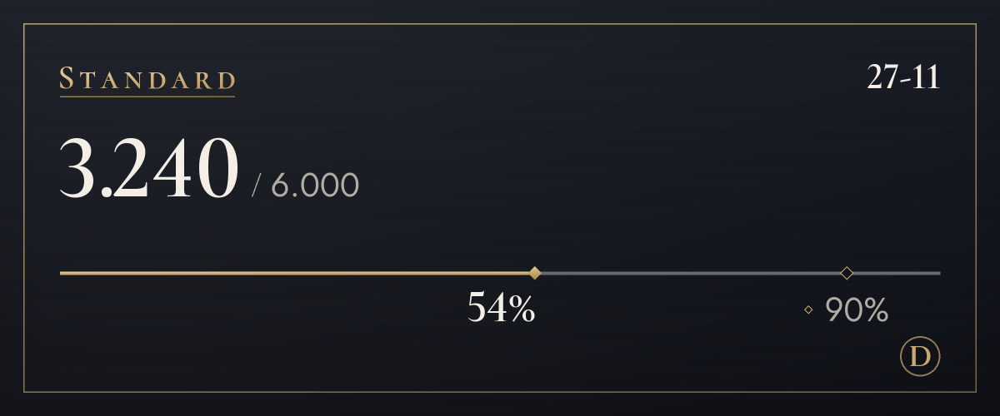

Abonnementen
Begin gratis en stap over als je meer nodig hebt.
We zitten in een testfase, dus we nemen nog geen betalingen aan. Zodra we betalingen aannemen, kun je op deze pagina een abonnement afsluiten en opzeggen. Tijdens de testfase stopt vertalen niet als je over de limiet gaat.
Free
$0
Probeer het eerst (het origineel bekijken telt niet mee)
100 vertalingen per maand (ongeveer 3 per dag), 4 tonen de eerste 14 dagen, 3 woorden in woordenlijst
Ook uit deze limiet: tekst in afbeeldingen (meestal 4 per afbeelding) en vertaling op afbeeldingen (meestal 6)
Zo begin jeLite
$4,99/maand
Kies per server een toon: jij tegen vrienden, u op een nieuwe plek
1.200 vertalingen per maand (ongeveer 40 per dag), 4 tonen, 20 extra per dag als je limiet op is, 10 woorden in woordenlijst
Ook uit deze limiet: tekst in afbeeldingen (meestal 4 per afbeelding) en vertaling op afbeeldingen (meestal 6)
Kiezen (Lite)Standard
Aanbevolen
$9,99/maand
Ruim voldoende om elke dag te chatten
6.000 vertalingen per maand (ongeveer 200 per dag), 4 tonen, 20 extra per dag als je limiet op is, 30 woorden in woordenlijst, 20 keer uitleg per maand
Ook uit deze limiet: tekst in afbeeldingen (meestal 4 per afbeelding) en vertaling op afbeeldingen (meestal 6)
Kiezen (Standard)Plus
$14,99/maand
De meeste ruimte, voor wie veel vertaalt
20.000 vertalingen per maand (ongeveer 667 per dag), 4 tonen, 20 extra per dag als je limiet op is, 100 woorden in woordenlijst, 60 keer uitleg per maand
Ook uit deze limiet: tekst in afbeeldingen (meestal 4 per afbeelding) en vertaling op afbeeldingen (meestal 6)
Kiezen (Plus)
- Prijzen zijn in Amerikaanse dollars. De belasting van je land komt erbij bij het afrekenen.
- Betaalde abonnementen zijn maandabonnementen die automatisch worden verlengd. Je kunt altijd opzeggen, en dan stopt de volgende betaling.
- Het Free-abonnement wordt nooit vanzelf een betaald abonnement.
- Je herroepingsrecht is beperkt voor het deel dat je al hebt gebruikt, en je kunt eerst het Free-abonnement uitproberen.
- Vertalingen worden gemaakt door AI (Claude van Anthropic). Ze kunnen fout zijn, dus check bij iets belangrijks ook het origineel.
- Meer details staan in de Gebruiksvoorwaarden en het Terugbetalingsbeleid.
Zo worden vertalingen geteld
De limieten van abonnementen worden in vertalingen geteld. Eén bericht vertaald naar één taal is 1 vertaling.
- Tekst
- 1 per berichtLange berichten tellen 1 extra per 200 tekens Koreaans, Chinees of Japans, of per 500 tekens in andere talen. Berichten zonder iets te vertalen tellen niet mee.
- Vertalen met rechtsklik
- 1 per berichtHetzelfde als tekst. Het origineel of een andere taal bekijken telt niet mee.
- Tekst in afbeelding
- Meestal 4 per afbeelding3 voor het lezen van een afbeelding, plus de vertaling van de gelezen tekst. Afbeeldingen zonder tekst tellen niet mee, en er worden tot 4 afbeeldingen per bericht gelezen.
- Vertaling op afbeelding
- 6 voor één tekstblok3 voor het lezen, 1 voor de vertaling en 2 voor het tekenen. Elk extra blok kost minstens 1 voor de vertaling ervan, en elke 16 blokken tellen als één afbeelding. Bij meer dan 16 blokken zie je eerst wat het kost, en het gaat door zodra je bevestigt (tot 128 blokken). Van lettertype wisselen telt niet mee.
- Spraakberichten Binnenkort
- 1 per seconde geluidHet transcriberen en vertalen van spraakberichten die vanuit de telefoon-app zijn verstuurd, wordt voorbereid. Zodra het beschikbaar is, komt de vertaling van wat er gezegd is erbij, en berichten zonder spraak tellen niet mee.
- Daglimiet
- 200 afbeeldingenDit wordt per persoon geteld en is in elk abonnement hetzelfde, zodat massaal geautomatiseerd gebruik de vertalingen voor alle anderen niet kan stilleggen.
- Wie betaalt
- Vertalingen die via de afbeeldingspictogrammen of met rechtsklik worden geopend, tellen voor wie erop drukte, niet voor wie het bericht plaatste.
Bijvoorbeeld
Met 200 vertalingen per dag
Standard, omgerekend per dag
Genoeg om een paar afbeeldingen te vertalen en toch de hele avond te chatten.
Met 40 vertalingen per dag
Lite, omgerekend per dag
Genoeg voor een uur kletsen met vrienden.

/vertalen gebruik.Veelgestelde vragen
Wanneer kun je betalen?
We zitten in een testfase, dus we nemen geen betalingen aan en iedereen gebruikt het Free-abonnement. Betalen wordt mogelijk zodra de bedrijfsregistratie en de betaalprovider geregeld zijn, en de datum maken we bekend in het nieuws op de supportserver en op deze pagina. In Korea wordt in won betaald, overal elders in Amerikaanse dollars.
Hoe zeg ik op?
Zodra we betalingen aannemen, zeg je op via de abonnementenpagina van deze website, dezelfde plek waar je een abonnement afsluit. Na het opzeggen stopt de volgende betaling, en je houdt je abonnement tot het einde van de betaalde periode. Ook het scherm “Abonnement beheren” in het instellingenpaneel van de bot brengt je hierheen.
Hoe werken terugbetalingen?
Je eerste betaling kun je binnen 7 dagen volledig terugkrijgen. We betalen ook terug bij storingen of als de dienst niet overeenkomt met wat op deze pagina staat. De rest staat in het Terugbetalingsbeleid.
Worden afbeeldingen opgeslagen?
De bot slaat ze niet op. Afbeeldingen gaan naar Anthropic, dat de tekst leest, en je krijgt alleen het resultaat te zien. Er wordt niets verstuurd voordat je op de knop drukt. Ook de gelezen tekst wordt niet opgeslagen; alleen de vertaling volgt de regel voor de vertaalcache (30 dagen). Zodat een ander lettertype meteen opnieuw kan worden getekend, blijft een afbeelding waarvoor je op “Op beeld zetten” drukt 15 minuten alleen in het geheugen, samen met de gelezen tekst en de vertaling ervan.
Wie maakt de vertalingen?
AI (Claude van Anthropic). Dezelfde AI leest tekst in afbeeldingen. Vertalingen kunnen fout zijn, dus check bij iets belangrijks ook het origineel. Afbeeldingen met een getekende vertaling vermelden “AI-vertaling” in hun beschrijving (alt-tekst) en in de notitie onder het resultaat.